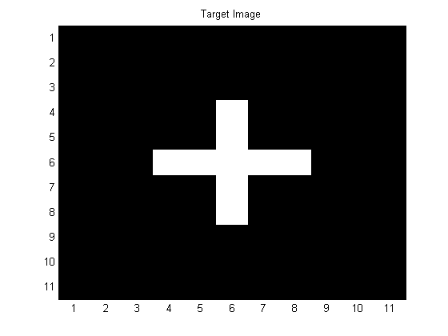
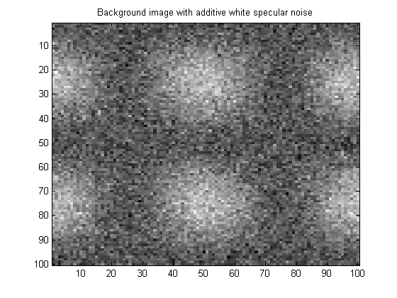
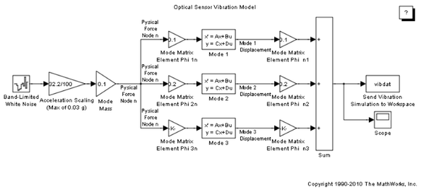
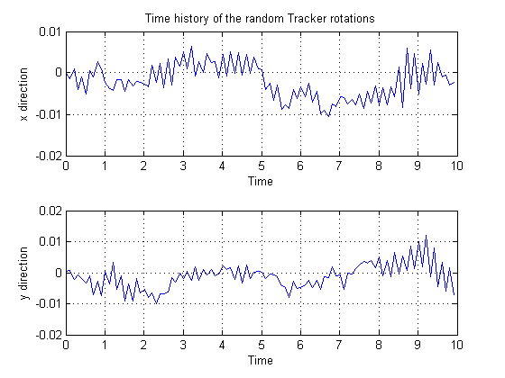
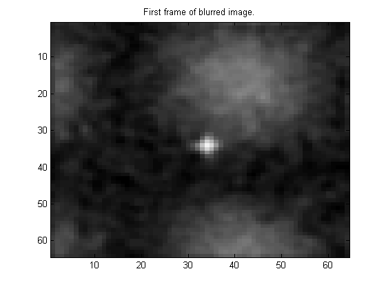
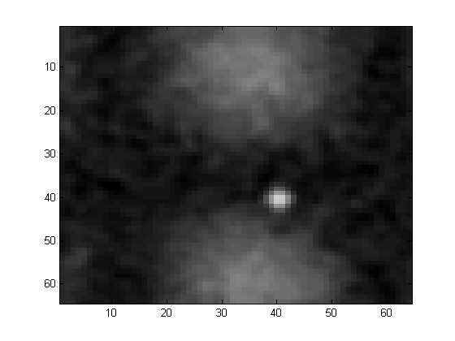

Optical Sensor Image Generation
Contents
- Generating an Optical Sensor Image From Simulated Movement Data
- Generate a Target and Define Its Motion
- Build Background and Target Composite Image
- Simulate the Tracker's Rotational Vibration
- Simulate the Motion Effects From the Background, Target, and Jitter
- Pass the Images Through Optics -- Use a Gaussian "Aperture Function"
- Generate the MATLAB® Movie and Play It Back
- OPTIONAL: Save the Movie in a .mat File
Generating an Optical Sensor Image From Simulated Movement Data
This script (aero_pointer_tracker.m) generates a movie with 64 frames and a frame size of 64 by 64 pixels (at 10 frames per second). The movie contains a simulation of a moving target that is moving through a structured background that is itself moving. A jitter motion caused by random vibration is also generated (in a Simulink® model called "aero_vibrati") and the jitter motion is added into the overall sensor motion. Finally, the image is blurred through a Gaussian optical point spread function.
Note: Changing delt here also requires a change in the parameters set-up dialog box in the Simulink model "vibration".
delt = 0.1; % Sample time of the generated sequence num_frames= 64; % Number of frames to generate framesize = 64; % Square frame size in pixels out = zeros(framesize,framesize,num_frames); % Initialize movie storage as a 3D Array
Generate a Target and Define Its Motion
The first stage is to define the shape and motion of the target object.The shape chosen is a large plus sign, and the image is defined by a matrix representing the image intensity at each pixel position. The Target is defined to be traveling from center to bottom right of the image.
target = [zeros(3,11)
zeros(1,5) 6 zeros(1,5)
zeros(1,5) 6 zeros(1,5)
zeros(1,3) 6 6 6 6 6 zeros(1,3) % Target is a plus sign 5 by 5 pixels across
zeros(1,5) 6 zeros(1,5) % with an intensity of 6 (S/N ratio is ~4).
zeros(1,5) 6 zeros(1,5) % The total target image is made on an 11x11 grid to
zeros(3,11)]; % allow the image to be interpolated without error.
target_velx = 1; % target velocity in x direction in pixels per second
target_vely = 1; % target velocity in y direction in pixels per second
target_x_initially = framesize/2; % the target is initially in the center of the frame in x
target_y_initially = framesize/2; % and in y
figure(1);
colormap('gray');
image(target*32);
title('Target Image')
 Build Background and Target Composite Image
Generate a sinusoidally correlated background and give it a drift motion. Then, overlay the target onto the background image.
backsize = framesize+36; % Make the background bigger than the frame so when it % drifts there are new pixels available to drift into. xygrid = (1:backsize)/backsize; B=2*sin(2*pi*xygrid).^2'*cos(2*pi*xygrid).^2; psd = fft2(B); psd = real(psd.*conj(psd)); background = B + 0.5*randn(backsize); % Add a specular Gaussian white % sequence to the structure with % variance of 0.25 (sigma of 0.5). xoff = 10; yoff = 10; % Sensor location is offset from the 0,0 of the background driftx = 1; drifty = 1; % drift rate of the background in a and y directions pix/sec. minout = min(min(min(background))); maxout = max(max(max(background))); colormap('gray'); image((background-minout)*64/(maxout-minout)) title('Background image with additive white specular noise')
Simulate the Tracker's Rotational Vibration
Rotational vibration of the tracker is simulated using model aero_vibrati. The data required to simulate the vibration of the tracker is generated by running the Simulink model "aero_vibrati".
Run Simulink vibration model using sim command (Note -- if the delt is changed from 0.1 seconds, the Simulink model must be changed also to ensure that the sample time for the vibration match the sample time in this tracker image model.
The resulting random rotations are shown in Figure 1.
omega = 2*pi*5; % The structural frequencies are 5, 10 and 15 Hz in the model. zeta = 0.01; % Damping ratio for all modes open_system('aero_vibrati') simout = sim('aero_vibrati','SrcWorkspace','current'); vibdat = simout.get('vibdat'); % The Simulink model "aero_vibrati" % generates the vibration data at % a sample time of 0.01 sec. vibx = vibdat(1:10:1000); % The output of simulation is % returned as the variable simout % The variable simout contains viby = vibdat(1001:10:2000); % the in array vibdat that contains % the vibration data levarmx = 10; % Rotational lever arm for vibration noise in x levarmy = 10; % and in y. subplot(211); plot(0.01*(1:10:1000),vibx);grid; title('Time history of the random Tracker rotations') xlabel('Time');ylabel('x direction') subplot(212); plot(0.01*(1:10:1000),viby);grid; xlabel('Time');ylabel('y direction') 
Simulate the Motion Effects From the Background, Target, and Jitter
The frames that will make up the movie are now created and stored in a multidimensional array (out). Each frame has the background and target at differing positions due to the target motion, background drift, and tracker vibration. The first frame of the movie will be shown in Figure 1.
clf; drawnow; for t = 1:num_frames % Drift the Background at the rate driftx and drifty % (in pixels/second) and add in the vibration: xshift = driftx*delt*t+levarmx*vibx(t,1); yshift = drifty*delt*t+levarmy*viby(t,1); % Interpolate the 2D image using the MATLAB(R) function interp2: [xgrid, ygrid] = meshgrid(1:backsize); [xindex, yindex] = meshgrid(xshift:1:xshift+backsize,yshift:1:yshift+backsize); outtemp = interp2(xgrid,ygrid,background,xindex,yindex); % Truncate the drifted image down from backsize to framesize: out(:,:,t) = outtemp(xoff:xoff+framesize-1,xoff:xoff+framesize-1); % Now let the target move also: tpixinx = floor(target_velx*delt*t); tpixiny = floor(target_vely*delt*t); % Before interpolating extract the number of pixels moved txi = target_velx*delt*t - tpixinx; tyi = target_vely*delt*t - tpixiny; % Interpolate on sub-pixels around the origin only [txgrid tygrid] = meshgrid(1:11); % meshgrid here generates a matrix of grid elements [txi tyi] = meshgrid(txi+1:txi+11,tyi+1:tyi+11); % meshgrid generates 2 matrices with the x and y grids % Interpolate the intensity values first using interp2 -- a built in MATLAB command temp = interp2(txgrid,tygrid,target,txi,tyi); % Insert the target at the location determined by the initial offset, and the number of whole pixels moved tx = tpixinx + target_x_initially-1; ty = tpixiny + target_y_initially-1; out(tx:tx+6,ty:ty+6,t) = temp(9:-1:3,9:-1:3) + out(tx:tx+6,ty:ty+6,t); end minout = min(min(min(out))); maxout = max(max(max(out))); colormap('gray'); image((out(:,:,1)-minout) * 64/(maxout-minout)); title('First frame of combined target and background image.')
Pass the Images Through Optics -- Use a Gaussian "Aperture Function"
This code segment can use a measured aperture function just as easily - simply replace the next five lines by "load measured_aperture" where measured_aperture is the measured function stored in ASCII and the data stored in the file measured_aperture.mat is a MATLAB® .mat file that contains the matrix apfunction. (in MATLAB type "help load" for how to use load and look at the c and fortran code that shows how to read and write MATLAB .mat files).
(Note: When the Point Spread Function is Gaussian, then so is the Aperture function)
To simulate the effect of the tracker optics, each of the movie frames is now blurred using a 2-D FFT (Fast Fourier Transform). The first frame of the resulting image is shown in Figure 1.
x = 1:framesize; y = 1:framesize; sigma = 120; apfunction = exp(-(x-framesize/2).^2/(2*sigma))' * exp(-(y-framesize/2).^2/(2*sigma)); apfunction = fftshift(apfunction); % Rotate so it conforms with FFT convention for j = 1:num_frames out(:,:,j) = real(ifft2(apfunction.*fft2(out(:,:,j)))); end minout = min(min(min(out))); maxout = max(max(max(out))); colormap('gray'); image((out(:,:,1)-minout)*64/(maxout-minout)); title('First frame of blurred image.')
Generate the MATLAB® Movie and Play It Back
Scale the movie frame so that is has 64 intensity values from the min to the max and then show the result as an image. See MATLAB help for how the moviein and getframe work.
minout = min(min(min(out))); maxout = max(max(max(out))); M = moviein(num_frames); for j = 1:num_frames image((out(:,:,j)-minout)*64/(maxout-minout)) drawnow M(:,j) = getframe; end colormap('gray') movie(M);
OPTIONAL: Save the Movie in a .mat File
You can optionally save the generated tracker movie in a mat file and also save the psd of the background for later use with the movie.
save trackerimage out save psdback psd save moviedat M
bdclose('aero_vibrati');